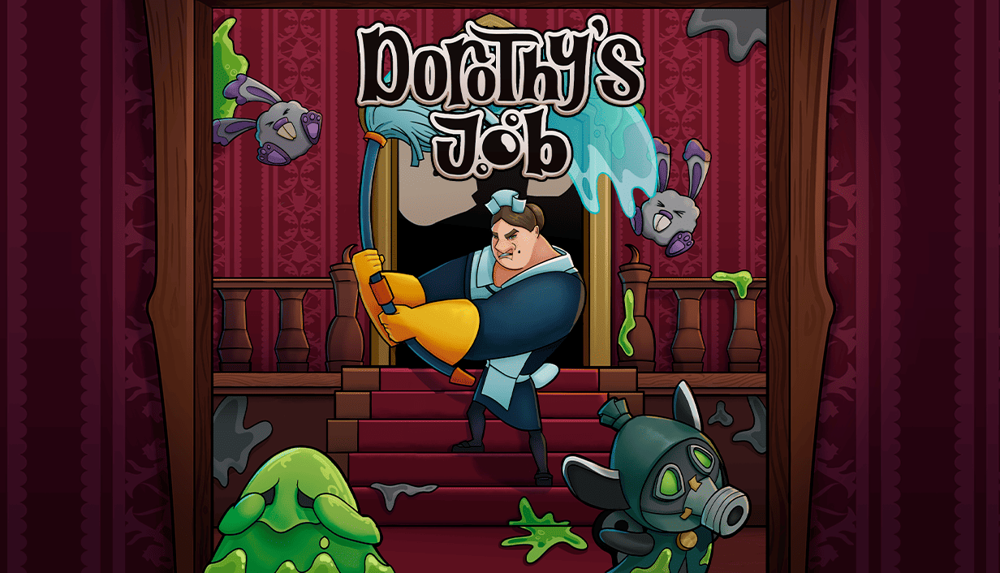
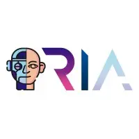
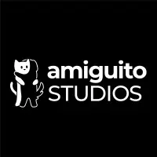
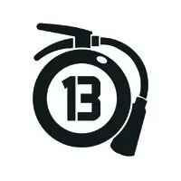

JAIME PÁRAMO
Programmer
Hello, World!
I am a Game Programmer based in Madrid specializing in gameplay systems, UI architecture, and audio implementation. With a deep focus on performance and modularity, I build robust systems in Unreal Engine 5 and C++ that empower designers to create without constraints.
Download ResumeCore Specialties
Gameplay Systems
Architecting scalable, modular C++ components, character controllers, and physics-driven mechanics in Unreal Engine to bring game design documents to life.
UI & Audio Architecture
Engineering complex, input-aware UMG frameworks and integrating dynamic, interactive audio experiences using FMOD for maximum player immersion.
Technical Education
Translating complex programming paradigms into accessible knowledge through structured curriculums, technical documentation, and team mentorship.
Technical Arsenal
Game Engines
- Unreal Engine 5+ Yrs
- Unity 4+ Yrs
- Godot 6+ Mos
- Scratch 6+ Mos
Languages
- C++ 2+ Yrs
- C# 3+ Yrs
- Python 1+ Yr
- Lua 1+ Yr
- GDScript 6+ Mos
Tools
- FMOD 3+ Yrs
- Git 3+ Yrs
- Notion 3+ Yrs
- LaTeX 2+ Yrs
Web Dev
- HTML 2+ Yrs
- CSS 2+ Yrs
- JavaScript 2+ Yrs
* Experience metrics reflect total time actively building with the technology, encompassing professional roles, academic research, and personal projects.
Featured Work
Blast Course 2
The explosive sequel to Blast Course. A first-person puzzle-platformer centered around the high-speed art of Rocket Jumping.

Dorothy's Job
A frenetic, comedic isometric twin-stick shooter where players control a heavily-armed maid fighting through chaotic, enemy-filled mansions.
Professional Experience
Robotics & Programming Teacher

Robots In Action
Teaching robotics and programming to primary school children through interactive and game-based learning, promoting computational thinking and creativity in a fun and accessible way.
Game Programmer

Amiguito Studios
Working on the sequel to Blast Course, contributing to gameplay programming and system development.
UI, Audio & Gameplay Programmer

Bola 13 Studios
Developed Dorothy’s Job, a humorous twin-stick shooter where players blast monsters and clean up the aftermath to keep their overlord’s castle spotless. Built in Unreal Engine 5 and released for free on Steam. As a UI, audio, and gameplay programmer, I contributed to core systems, implemented FMOD audio integration, and developed key user interface features within a multidisciplinary team of over 30 members.
Unreal Engine 5 Game Development Teacher
U-tad
I was responsible for designing and delivering 20-hour courses for groups of around 25 secondary school students, covering a range of topics in game development.
Research Assistant
U-tad
As part of the scholarship, I participated in ARTEMIS, a multidisciplinary research project focused on designing rhythmic experiences to enhance emotional well-being. I collaborated with psychologists and musicians to conceptualize and structure interactive experiences grounded in rhythm and emotion. I implemented the project in Unity, translating research insights into a functional and engaging digital prototype.
Ready to review my code?
Dive into my full portfolio to read my architectural whitepapers and implementations, or reach out directly.